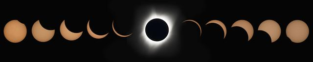

Space is one of my favorite things, but it took me a long time to realize it. After nearly three decades under the stars, I am still learning to appreciate their magic.
Space exists
In high school, I discovered how cathartic a stroll could be. The increased blood-flow, the fresh air, and the change of scenery were often my best tools to cope with adolescence.
One particularly troubled night, I stepped into my yard and was struck by the beauty of clouds crossing in front of the moon. The cool breeze stirred a sense of wonder in me, and I stood looking up at the sky. The longer I stared, the more stars I saw. I had never realized that most stars were invisible at first glance. I felt like I had stumbled into a secret world. I stared at the sky for a half-hour before my parents called me inside. When they asked me why I had gone outside in the first place, I couldn’t remember.
I didn’t yet comprehend what I had seen, but I knew it was worth seeing.
Space is huge
Later that year, I went on an overnight canoeing/camping trip with my church. I was a shy kid, and I hadn’t yet made any friends in the youth group. I was also one of the few kids to bring a tent that slept more than one person. So when I was asked if someone could sleep in it, I awkwardly agreed. Then another person asked, and I agreed again. By the time I started to do the math, the tent was over capacity.
I was most comfortable alone anyway, so I slept on the sand along the river’s edge. Away from the city’s light pollution, I saw the full sky for the first time.
Even at a glance, there were hundreds of stars. Thousands. After my night vision recovered, my mind wrestled with the concept of innumerability. I was awe-struck.
And then the first shooting star flashed across the sky. Of course, I made a wish. And then another. And another. Within a few minutes, I had run out of wishes and just took it all in. I don’t know how long I stared at the sky that night, but I know I was the last camper to fall asleep. And I was sorely disappointed to wake up to a bright sky the next morning.
Space is romantic
When I returned home, I began researching stars. I downloaded some software to my computer that let me simulate the observed universe and I began to learn the most basic constellations. (Basically, I could spot Orion’s belt and infer where Orion was. I was never quite sure which direction was his head, though.)
I had just begun to spend time with a girl I liked, and I decided to share my new fascination with her. We went into my yard one night, along with a laptop that held a map to the sky, and tried to find constellations. We were terrible at it, but it was a lot of fun. I hadn’t even planned the night to be romantic – I just wanted to share something that I liked with one of my favorite people.
That girl, Danielle, became the love of my life. We both remember that night fondly.
Space is within reach
As high school came to a close, I found myself preoccupied with thoughts of my future. When I moved away to college, I found myself in a big city with light pollution. I rarely saw the stars, and to an extent, I forgot they were there.
A couple of years ago, while reading a technology news site, I became fascinated by SpaceX’s plans to land and reuse rocket boosters. After realizing that rocket launches can be seen from across the state on a clear day, I found myself atop a parking garage looking east. I saw the smoke of the launch, watched the landing live on my phone, and I was hooked. A few weeks later, the next rocket launch happened at 2am, and I was able to clearly see the rocket’s red glare as it carried supplies to the International Space Station.
I started following rocket launches obsessively, logged hundreds of hours playing Kerbal Space Program, went on a camping trip with friends specifically because it coincided with a meteor shower, acquired Kennedy Space Center passes with Danielle, and even celebrated my birthday at a dark sky event.
All of these experiences sprung from an important discovery: space is within reach. We know more about the cosmos, and our place in it, than we ever have before. We can do better than scrape the sky – we can inhabit it.
Space is ours
It is important for me to note that my wife, Danielle, has been very patient and supportive of my growing obsession. She shares my love for the cosmos and our place in it. Many of the magical space-related experiences I have had would not have been possible (or nearly as much fun) without her support and planning.
One important part of her planning has been to include friends. As someone comfortable alone, I often forget the joy of sharing experiences with others. But the experiences I have had with friends have almost always been the most fulfilling.
One such experience was the Great American Eclipse of 2017. Ever since I found out about the eclipse, I had hoped to see it. However, due to health problems and stress at work, I failed to plan for it properly. After I expressed my disappointment at not being able to see totality, Danielle and a good friend planned a way for us to stay in South Carolina with our friend’s family.
However, once we were in South Carolina, we found ourselves in a city with poor weather. I contacted a friend in a nearby city, and they graciously allowed us to sleep at their house and experience the eclipse with them the next day. As magical as the eclipse itself was, an important part of the magic was the company I shared that day.
Given the coverage and the number of people who experienced it online or in person, I hope that many others are beginning this same journey of wonder and awareness.
This universe is ours to discover and explore. We just have to look up.

(Photo credit: NASA)